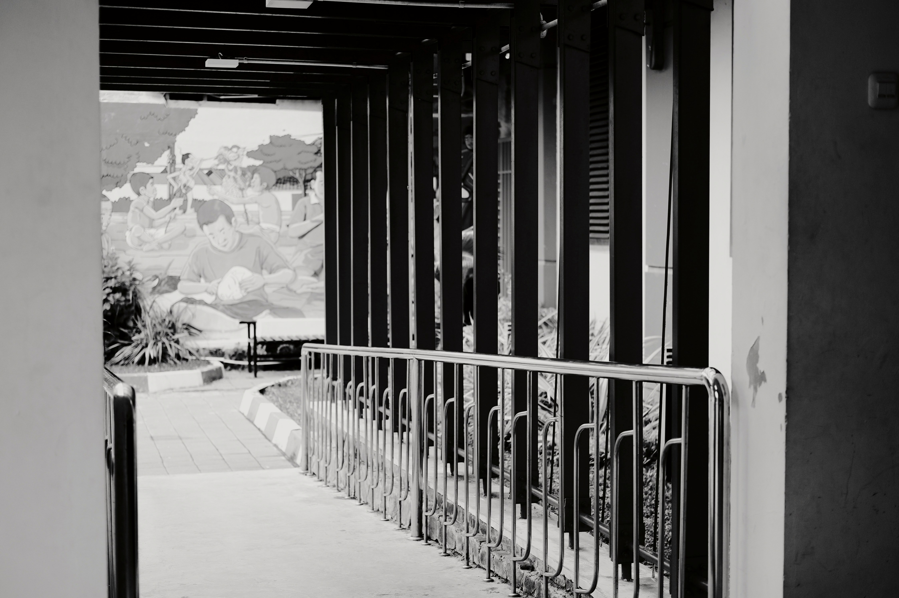
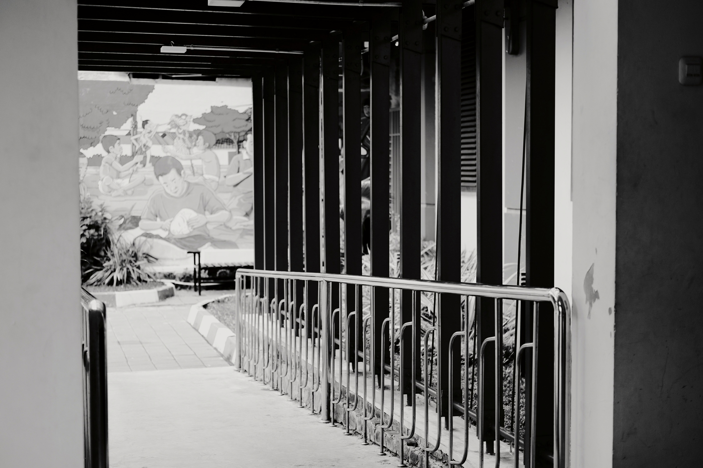

BTS Symphony Night ofrece una experiencia sofisticada para disfrutar de la música de BTS como nunca antes. Una orquesta sinfónica interpretará versiones instrumentales de las canciones más populares del grupo, transformando sus éxitos en piezas clásicas que permitirán al público redescubrir cada melodía en un ambiente íntimo y refinado. Las interpretaciones de temas como "Spring Day," "Fake Love," y "DNA" cobrarán nueva vida bajo los arreglos de la orquesta, acompañadas de visuales artísticos en pantalla que reflejan los temas de cada canción. El evento es ideal para fans que desean disfrutar de BTS desde una perspectiva musical única, en un formato que destaca la profundidad y complejidad de sus composiciones.
El concierto “Beyond the Stage” se llevará a cabo en el Seoul World Cup Stadium y promete ser un espectáculo único en su tipo. BTS presentará una selección de sus grandes éxitos, acompañados de una producción audiovisual impresionante.
El evento contará con varias actividades interactivas, incluyendo una Zona de Realidad Aumentada, una galería de recuerdos de BTS, y un espacio dedicado a mensajes para BTS, donde los fans pueden expresar su apoyo y amor por el grupo.
Es una oportunidad perfecta para que el ARMY disfrute de una experiencia en vivo, conectando con BTS y con otros fans de todo el mundo en un ambiente seguro y emocionante.
Los temas seleccionados para BTS Symphony Night incluyen grandes éxitos como “Spring Day,” una canción profundamente melancólica que trata sobre la pérdida y la esperanza, la cual cobrará una nueva dimensión cuando sea interpretada por la cálida resonancia de los violonchelos y el profundo eco de los contrabajos. La familiaridad de esta melodía en su versión pop se convierte aquí en una experiencia emocional más introspectiva, donde cada nota es capaz de transmitir la esencia de los sentimientos de anhelo y conexión que BTS buscaba expresar. Otro de los temas destacados será “Fake Love,” cuya intensidad y energía cobran un significado diferente cuando se llevan al formato sinfónico. Los profundos y oscuros arreglos de cuerdas darán a la canción un tono dramático que enfatiza el conflicto interno y la desesperación que evocan las letras, mientras que el uso de la percusión orquestal añade un peso emocional que transforma esta canción en una experiencia de catarsis para los oyentes. Por su parte, “DNA,” una de las canciones más vibrantes y enérgicas de BTS, recibirá un arreglo orquestal que resaltará su carácter alegre y expansivo, convirtiéndola en una pieza vibrante de celebración. Los juegos rítmicos en los timbales y la profundidad de las trompetas darán un dinamismo especial a cada compás, haciendo que el público pueda redescubrir esta canción desde una perspectiva completamente fresca, mientras los arreglos de viento y las armonías de las cuerdas transportan a los oyentes en una danza musical de energía y color. Además de la música, BTS Symphony Night contará con visuales artísticos proyectados en una pantalla gigante detrás de la orquesta, los cuales serán cuidadosamente sincronizados con cada tema. Estas imágenes reflejarán los temas y emociones de cada canción, desde paisajes serenos y etéreos hasta escenas abstractas llenas de movimiento y color, que realzan la narrativa de las piezas y permiten al público sumergirse de lleno en el universo conceptual de BTS. Los visuales, diseñados por artistas de renombre, estarán inspirados en los elementos simbólicos presentes en los videos musicales y las letras de las canciones, logrando una perfecta sinergia entre la música y las imágenes que dará vida a un espectáculo multisensorial único. El evento tendrá lugar en un ambiente íntimo y refinado, especialmente diseñado para que el público disfrute de la interpretación en un espacio tranquilo y lleno de detalles visuales, donde la acústica permitirá que cada instrumento sea apreciado en su totalidad, desde el delicado susurro de las flautas hasta el potente estruendo de los timbales. Los asistentes podrán apreciar la profundidad de las composiciones de BTS de una manera completamente diferente, sumergiéndose en una atmósfera de paz y reflexión. BTS Symphony Night
 
